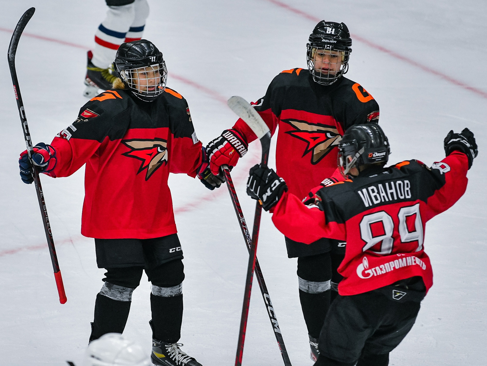

На главную
Новости
Новость №1
Содержание
- Футбол
- Хоккей
- Погода
Футбол
Бразильская конфедерация футбола и Catapult заключили знаковое партнерство для улучшения результатов спортсменов.
Ссылка на гугл.
Задание №1
Хоккей

Хоккей – один из самых популярных видов спорта в России. Cуществует мнение, что хоккей является опасным видом спорта, который неизбежно приводит к серьезным травмам, потере зубов и переломам. Но опасен ли хоккей на самом деле?
Ссылка на гугл
Погода
23°C°F Вероятность осадков: 25%
Влажность: 52%
Ветер: 4 м/с

Ссылка на гугл